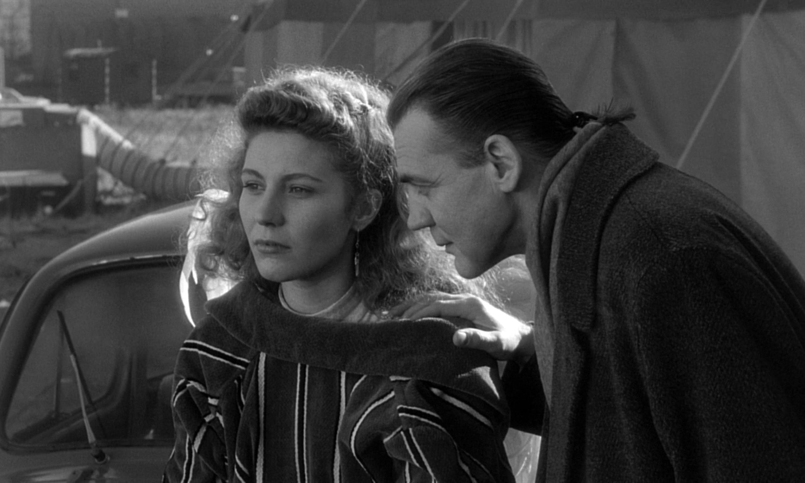
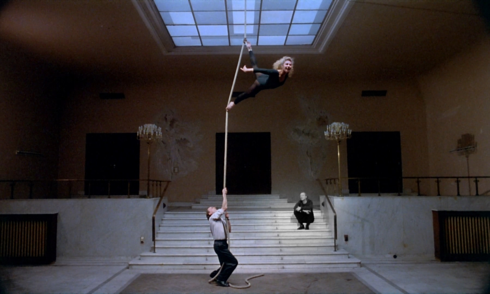

Film relates to culture by being an inherently cultural artifact and artform. A film, particularly if it is popular or well produced, either will gather a majority of its motifs (dialogue mechanics, setting design, plot shape, topics covered, etc.) from the culture it is produced in or can influence them on the culture after release. Films often influence other films that are being produced or the way future films might be received or designed, which is another way film interacts with and has an effect on a culture, its art, and media consumption over time. The philosophical thinkers Jacques Rancière, Max Horkheimer, and Theodor W. Adorno tentatively agree that film recreates and reinforces the cultures and societies that they are produced for. In this paper I will show how these thinkers argue that cinema reproduces pressures present in a society as well as how films utilize culturally recognizable objects and other plastic arts. I will use the example of Wings of Desire (1987), directed by Wim Wenders, which offers a deliberate counter to the dominant culture it is produced for, while exploring the interaction between nature and society, to illustrate these conclusions.
 Wings of Desire (1987) 00:29:26Cinema reproduces the pressures that are present in a culture, acting upon them for reasons ranging from associative appeal and conflict construction, as Rancière argues in their essay “A Thwarted Fable”, to conventions of subversion and subjugation, as Horkheimer and Adorno argue in their essay “The Culture Industry: Enlightenment as Mass Deception” (Rancière 293; Horkheimer and Adorno 263). An example of such a relation is the dialectic that Rancière refers to between “impotence and excessive power”, which can be compared to the dialectic of the individual within a capitalist culture, one that demands individual direction and economy against an economic system that views individuals as numbers and objects (292). A film may attempt to overcome some structural or cultural concept, such as how Wings of Desire draws importance and gratitude onto “everyday” experiences, yet can only draw this contrast because of the existence of the reality of a culture that insists on foregoing the same moment of mindfulness and pleasure. The angel Damiel (Bruno Ganz) repeatedly reorients characters in the film to focus on their individual lives and sources of happiness, rather than on the suffocating nature of the culture they reside in amongst the German economy of the 80’s (00:22:33-00:23:54, 00:36:20-00:37:39). A film either relies on the cultural significance of the actions or relationships of the characters in the film world, or it constructs a recognizable metaphor in which conflicts or associations replicate the outside world. While Rancière supposes cinema develops a dialectic by constructing aspects of reality (nostalgia) and perpetually undermining it (condescension), Horkheimer and Adorno seem to have a slightly more pessimistic view that the industry mechanism of cinema, or the “culture industry”, presupposes itself to deterring dissension through “pseudo individuality” (Rancière 285, Horkheimer and Adorno 263). They write, “The culture industry tends to make itself the embodiment of authoritative pronouncements, and thus the irrefutable prophet of the prevailing order” (Horkheimer and Adorno 259). A film’s pronunciation of how a character establishes themselves among the film world results in capitulation to one’s place or desired place in their own culture, dissolving the individual through a mass-consumed, capitalist product.
 Wings of Desire (1987) 00:23:29
Wings of Desire (1987) 00:23:29
Film also relates to culture through the simple fact that it utilizes culturally recognizable objects, narrative forms, and concepts from other plastic arts. Furthermore, cinema according to Rancière incorporates itself into a culture’s topical period/phase of popular art, integrating current events, objects, and ideas of the time into the mise-en-scene, narrative, and dialogue. Rancière writes regarding Epstein’s conclusions on film, it is “…a dramaturgy of art in general as of the cinema in particular, because it belongs more to the aesthetic moment of cinema than to the distinctiveness of its technical means” (Rancière 286). Films participate in the cultural flow of popular motifs, such as fashion trends, in an ever cascading and evolving march forward from one aesthetic moment to the next, from one trend to another. I would argue film’s integral role in the aesthetics of an era, through its mass dissemination, ties it to a culture and a culture’s art and aspects. In other words, “The art of the aesthetic age abolishes all of these borders because it makes art of everything” (Rancière 289). Cinema, being a culmination of the potential of all preceding art forms, is the embodiment of this abolishing blurring of lines between what is art and what is not, what is a cultural artifact and what is not. However, Horkheimer and Adorno frame the way that film appropriates and popularizes consumerism and conformity, as “…idolization of the cheap involves making the average heroic… The prevailing taste takes its ideal from advertising, the beauty in consumption” (264). The commercialization of the cinema is inseparable from society because of the goal that the culture industry has to make the artist, the filmmaker, “cover up the contradiction” from the audience that relates to and engages with their films (Horkheimer and Adorno 265). Where Rancière sees this as the inherent nature of film, “its artistic procedures to construct dramaturgies that thwart its natural powers”, a revelatory mechanism, Horkheimer and Adorno view this contradictory system of cinema with appreciably more skepticism, that it subverts individualism and dissent from the norm (Rancière 290). Wings of Desire performs this function of using the culturally relevant mythos of angels and subverting the audience’s expectation by depicting the angel’s “view” as black and white throughout the film, while showing the human “view” as full color. As with Damiel’s character trying to restore happiness to the people he interacts with, when he becomes a human, he is entranced with common human experiences such as noticing different shades of colors, smells, tastes, uncertainty, and even love. The film strays away from cinema’s usual approach to sensationalizing commodification and conformation by highlighting “different” aspects of culture and society that enhance and ground people to themselves and what they value internally. Instead of making some theoretical idealistic lifestyle, such as a wealthy entrepreneur living in a downtown flat or mythical figure desirable, the goal of Wings of Desire seems to aim to spectacularize the human condition through an angel that spends his time in a public library.
 Wings of Desire (1987) 02:02:46To summarize what has been stated so far, film is a cultural artifact and art form that both reflects and reinforces the culture it is produced for. Cinema has an impact on society, either through associative appeal and conflict construction or through conventions of subversion and subjugation. Films utilize culturally recognizable objects, narrative forms, and concepts from other plastic arts, and integrate current events, objects, and ideas of the time into the mise-en-scene, narrative, and dialogue, cementing itself as a cultural and social medium. Wings of Desire draws importance and gratitude onto everyday experiences and uses the culturally relevant mythos of angels to subvert the audience’s expectations of how to receive the film’s message. The three philosophical thinkers, Rancière, Horkheimer, and Adorno, agree that film is an integral part of a culture's art and aspects, and its mass circulation and intent behind its production ties the industry to a culture's aesthetics and values.
Horkheimer, Max and Adorno, Theodor W. “The Culture Industry: Enlightenment as Mass Deception.” Translated by John Cumming, Westfall, pp. 244-270.
Rancière, Jacques. “A Thwarted Fable.” Translated by Emiliano Battista, Westfall, pp. 283-296.
Wings of Desire. Directed by Wim Wenders, performances by Bruno Ganz, Solveig Dommartin, and Otto Sander, Argos Films, 1987.
Westfall, Joseph, editor. The Continental Philosophy of Film Reader. Bloomsbury Academic, 2018.
Chandler Murray
e:Murrayc15@gator.uhd.edu